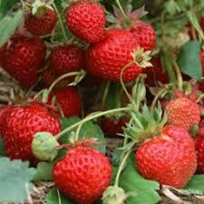
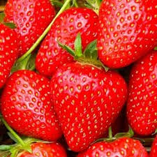

Les différentes variétés de fraises
Il existe de nombreuses variétés de fraises, parmi lesquelles :
Les tailles des fraises selon les variétés
La gariguette
Mesure entre 2 et 3 cm de long.
La mariguette

Mesure entre 3 et 4 cm de long.
La cléry

Mesure entre 4 et 5 cm de long